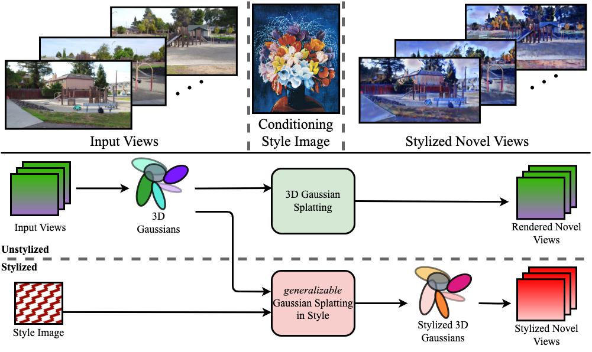

3D scene stylization extends the work of neural style transfer to 3D. A vital challenge in this problem is to maintain the uniformity of the stylized appearance across multiple views. A vast majority of the previous works achieve this by training a 3D model for every stylized image and a set of multi-view images. In contrast, we propose a novel architecture trained on a collection of style images that, at test time, produces real time high-quality stylized novel views. We choose the underlying 3D scene representation for our model as 3D Gaussian splatting. We take the 3D Gaussians and process them using a multi-resolution hash grid and a tiny MLP to obtain stylized views. The MLP is conditioned on different style codes for generalization to different styles during test time. The explicit nature of 3D Gaussians gives us inherent advantages over NeRF-based methods, including geometric consistency and a fast training and rendering regime. This enables our method to be useful for various practical use cases, such as augmented or virtual reality. We demonstrate that our method achieves state-of-the-art performance with superior visual quality on various indoor and outdoor real-world data.

a) We develop a novel state-of-the-art method, GSS, to perform neural scene stylization in real-time based on 3D Gaussian splatting. We are among the first to perform scene stylization using 3D Gaussians
b) We demonstrate the effectiveness of our method by comparing against various types of baselines both quantitatively and qualitatively across various real-world datasets across different settings.